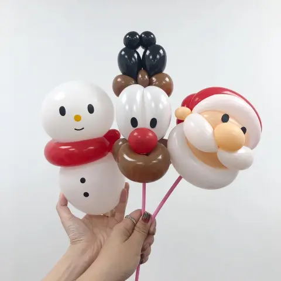
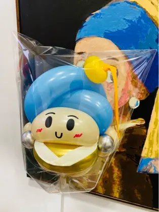
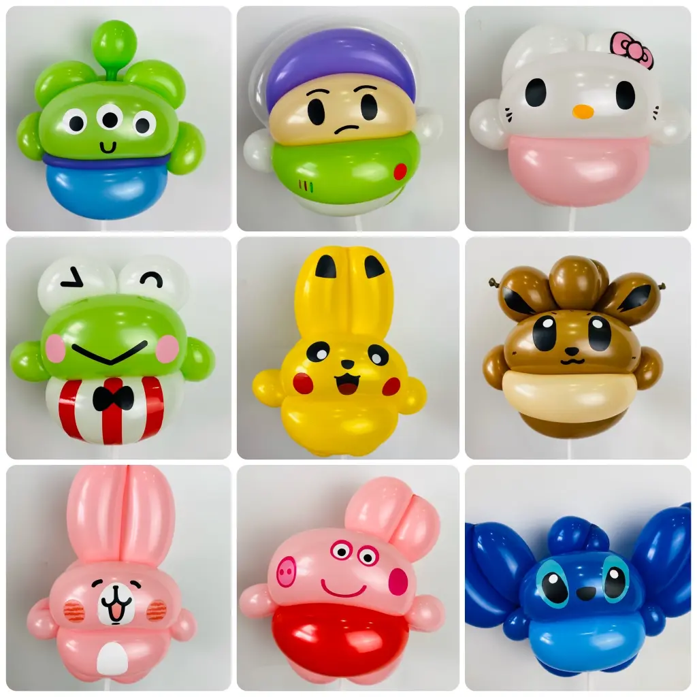
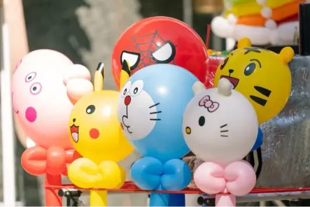
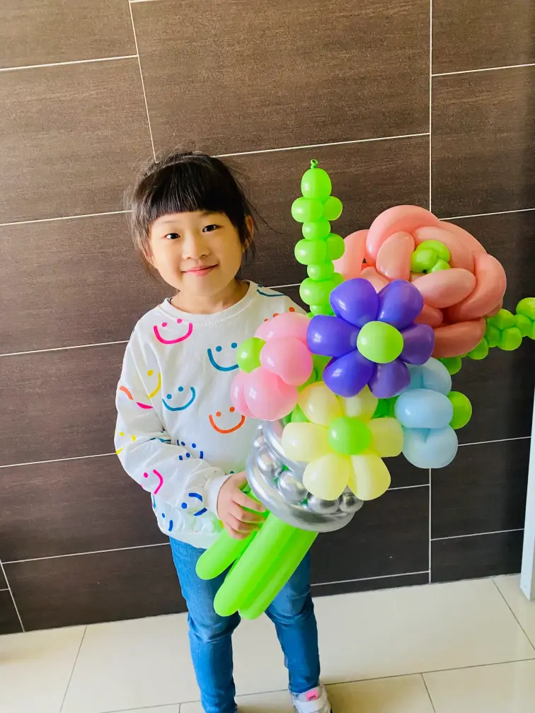
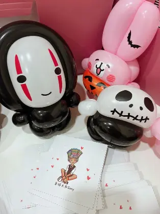

造型氣球互動服務
定點折氣球 × 沿桌互動 × 主秀後加值派送
造型氣球互動服務不是單純把氣球折完發出去，而是透過快速手折、自由點餐與自然互動，讓現場氣氛慢慢聚起來。氣球大叔 Sony 擁有街頭藝人起家的紮實底子，能同時兼顧作品精緻度、手速與現場節奏。無論是生日派對定點折氣球、活動迎賓、沿桌互動、主秀後續派送，都能依活動型態安排最適合的氣球互動方式，讓孩子願意靠近、家長願意停下來，主辦也能明顯感受到現場的參與感被帶起來。
🎈 造型氣球最常被安排的 6 種活動方式
- 生日派對定點折氣球：孩子最期待的互動服務，邊做邊發，派對氣氛自然被帶起來。
- 主秀後續派送：魔術表演或泡泡秀結束後，延續孩子熱度，讓沒拿到氣球的孩子也有滿足感。
- 活動迎賓定點折氣球：適合品牌活動、社區活動、校園節慶，讓賓客一進場就感受到歡樂氛圍。
- 沿桌互動折氣球：適合尾牙、春酒、婚禮、親子餐敘，機動性高，能讓每桌都被照顧到。
- 百貨市集自由點餐互動：孩子可自由點選喜歡的角色造型，聚客效果強，也最容易形成排隊與拍照畫面。
- 餐敘型活動的預約領取安排：適合大量人流場景，先登記、再領取，兼顧流程與體驗。
🏆 各大指標企業與親子活動指定氣球達人：
擁有 10年以上專業氣球演出經驗，累積折製超過 50,000 顆造型氣球。感謝 台積電 TSMC、IKEA、德州儀器、巴斯夫 BASF 以及全台各大百貨與親子市集長期指定合作，給您最吸睛、高互動的氣球派送服務。






✨ 為什麼主辦單位喜歡找氣球大叔做現場造型氣球？
- 作品不只是基本款：不只是狗狗、寶劍，而是能讓孩子真的驚呼的角色與主題造型。
- 手速快，能應付排隊需求：在人流量大的活動裡，快速製作與穩定輸出非常重要。
- 街頭藝人底子，互動自然：不是低頭折氣球，而是能一邊折、一邊帶動現場情緒。
- 品項多，可自由點餐：孩子與家長能直接點想要的造型，互動感更強。
- 一開始互動，現場就會慢慢聚起來：孩子會圍過來，家長會拍照，主辦也能感受到停留效果與現場氣氛被自然帶動。
📝 尾牙、春酒、婚禮也適合安排造型氣球互動
透過「許願板與號碼貼紙機制」，賓客可以先寫下想要的造型、拿取對應號碼，再安心回座用餐，之後憑貼紙找大叔領取氣球，完美兼顧流程與體驗。
現場的小朋友或家長，只要先在許願板對應格子裡寫下想要的造型，再拿取對應編號的貼紙，就可以安心回到座位繼續用餐，不需要一直站在旁邊排隊等候。等到有空時，再憑貼紙回來找大叔領取氣球即可。
這個設計看起來很簡單，但在尾牙與婚禮現場非常有用。它解決的不只是排隊問題，而是整體流程秩序。主辦方不用擔心現場擁擠，家長不用顧著排隊，小朋友也有一種「我已經登記好，等等就可以拿到」的期待感。對企業活動來說，這種能兼顧流程秩序與體驗的安排，往往比單純多一個表演更有價值。
這套做法是氣球大叔 Sony 依照尾牙、春酒、婚禮與企業餐敘現場經驗，慢慢整理出來更適合餐敘型活動的互動安排。看起來簡單，實際上能大幅減少排隊壓力，也讓賓客體驗更從容。
💡 造型氣球也能這樣搭配
- 搭配魔術表演：先看秀，再安排氣球派送，活動完整度最高。
- 搭配泡泡秀：先用夢幻泡泡吸住目光，再用造型氣球延續孩子期待感。
- 搭配佈置服務：從背板、主視覺到現場互動一次完成，適合生日派對與品牌活動。
- 搭配迎賓流程：讓賓客一進場就有參與感，活動一開始就熱起來。
🔥 相關氣球派送與互動實績：
- 👉 企業尾牙派送：台北益網科技尾牙｜新東南海鮮餐廳人氣手折氣球
- 👉 市集街頭互動：台北花博 MAJI 市集｜街頭氣球互動演出
- 👉 百貨商場引流：新竹巨城 Big City｜創業成果展造型氣球發送
- 👉 節慶主題派送：桃園台茂購物中心｜聖誕主題造型氣球快閃
造型氣球互動服務 常見問題 FAQ
Q1：造型氣球適合定點折還是沿桌互動？
A1：兩者皆適合！若現場有明確迎賓區或市集攤位，適合「定點排隊或預約點餐」；若是尾牙、春酒、婚宴等餐會，大叔則會機動進行「沿桌互動」，確保每一桌都能被歡樂氣氛照顧到。
Q2：單場大約可以做多少件？
A2：依據造型的複雜度與現場互動節奏，單場活動通常可產出 30～100 件不等的造型氣球。若遇大量人流，大叔會主動切換為高效率的精緻快速款，兼顧作品品質與發送速度。
Q3：活動現場可以自由點餐嗎？
A3：沒問題！大叔提供豐富的造型圖庫與品項，孩子與家長可以直接點選喜歡的卡通角色或動物，大幅提升參與者的專屬感與互動樂趣。
Q4：尾牙、春酒、婚禮也適合安排嗎？
A4：非常適合！針對需要賓客坐在位子上用餐的場合，大叔有專屬的「許願板預約機制」，賓客點餐後可回座等待，不影響上菜動線，完美兼顧會場秩序與歡樂體驗。
Q5：可以搭配魔術、泡泡秀或佈置一起安排嗎？
A5：這是許多主辦單位的首選！您可以將造型氣球安排在魔術主秀後做「加值派送」，或是整合主題背板佈置與夢幻泡泡秀，打造一站式的完美親子活動。
🎈 想安排一場邊互動、邊派送，現場氣氛自然被帶起來的造型氣球服務嗎？
生日派對、百貨商場、市集活動、企業家庭日、尾牙春酒、婚禮餐敘，都能依現場需求安排最適合的氣球互動方式。
💬 點我加 LINE 詢問大叔檔期